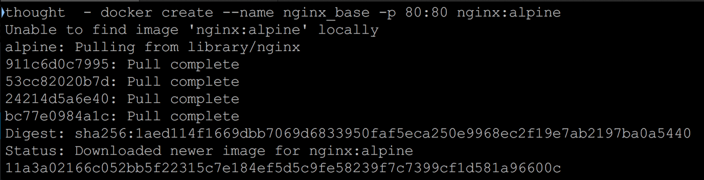

Docker is an open source project that makes it easier to create containers and container-based apps. Docker is also used to organize depedencies based on the project, so a user doesn't need to have random and unused depedencies on their system.
Docker also has an amazing community that has built many containers already for different programs, so it removes the need of reinventing the wheel.
From https://www.scalyr.com/blog/create-docker-image/
The Docker create command will create a new container for us from the command line:
docker - create --name nginx_base -p 80:80 nginx:alpine
If you don’t have the nginx:alpine image in your local docker image repository, it will download automatically. When this happens, you will see something like this:
Run the command:
docker images
If you look at the list of images on your system, you will now see the nginx:alpine image.
Run the command:
docker ps -a
Note here that the container is not running, so you won’t see it in the container list unless you use the -a flag (-a is for all).
Now we start the nginx container
docker start nginx_base
If you visit http://localhost. You should now see your nginx container.
So if you wanted to modify this running container so that it behaves in a specific way, there are a variety of ways to do that.
In order to keep things as simple as possible, we are just going to copy a new index.html file onto the server. You could do practically anything you wanted here.
Let’s create a new index.html file and copy it onto the running container. Using an editor on your machine, create an index.html file in the same directory that you have been running Docker commands from.
Then save the file and return to the command line. We will use the docker cp command to copy this file onto the running container.
docker cp index.html nginx_base:/usr/share/nginx/html/index.html
Now reload your browser or revisit http://localhost. You will see the edits made in your index.html file.